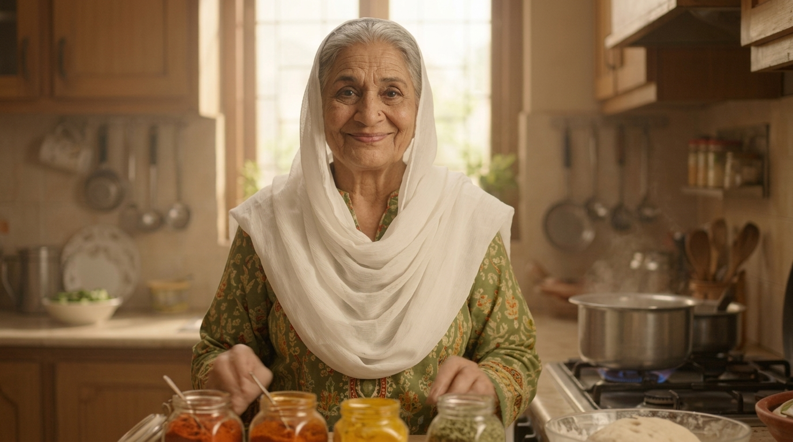

Karachi & Sindh
Spicy biryani, bun kebabs and sweet treats.
Ghar ka khana, dil ka sukoon. ❤️
From Karachi biryani to Lahore's halwa puri, explore the aromas and traditions that make Pakistani food feel like home.
Explore the recipes ↓Assalam-o-Alaikum beta! Welcome to Daadi's kitchen, where every recipe has a memory and every cup of chai feels like home.
From biryani and karahi to homemade halwa, Daadi is the warm face of DAADI KA DHABA and your guide to Desi Zaika.
Ask Daadi for a recipe →
Step into Daadi's kitchen and make yourself at home. Press play to watch her welcome video.
Layered rice, fragrant spices and a little patience — the ultimate Pakistani celebration dish. Open the recipe below for a home-style version.
Browse easy-to-follow Pakistani home-style recipe guides, or discover demonstrations on YouTube.
Ask Daadi about Pakistani recipes, ingredients, cooking times, chai-time favourites and what to make tonight!
Daadi is a local recipe guide using Desi Zaika's recipes, not a live AI or a person. Questions stay in your browser and aren't sent to a chatbot server. Always check allergens and cook meat thoroughly.
Spicy biryani, bun kebabs and sweet treats.
Karahi, nihari, breakfasts and irresistible lassi.
Chapli kebab, rich meat dishes and welcoming hospitality.
Sajji, slow-roasted flavours and hearty gatherings.
Every great meal deserves good company. Come talk food, family recipes and your favourite desi dishes in our community chat.
Join GUPSHUP →